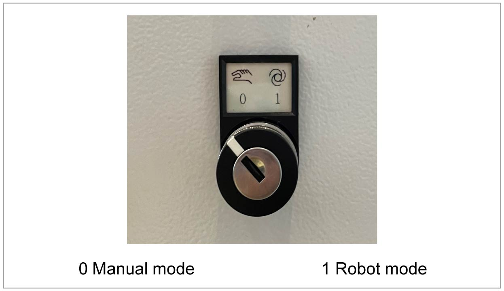
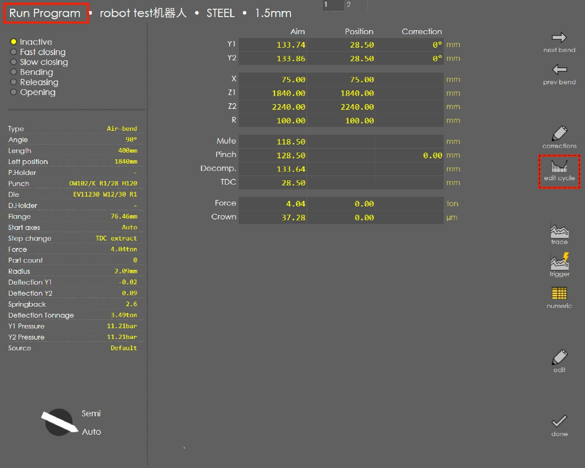
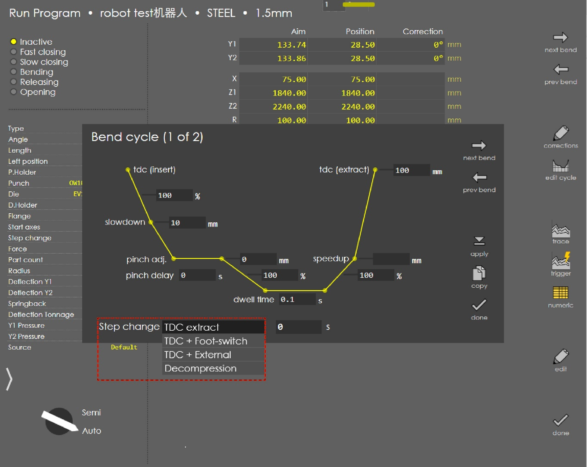
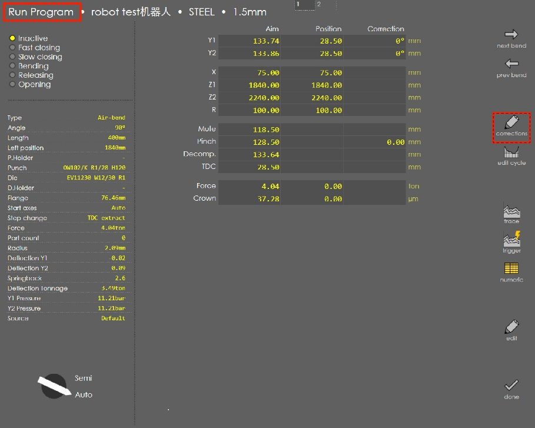
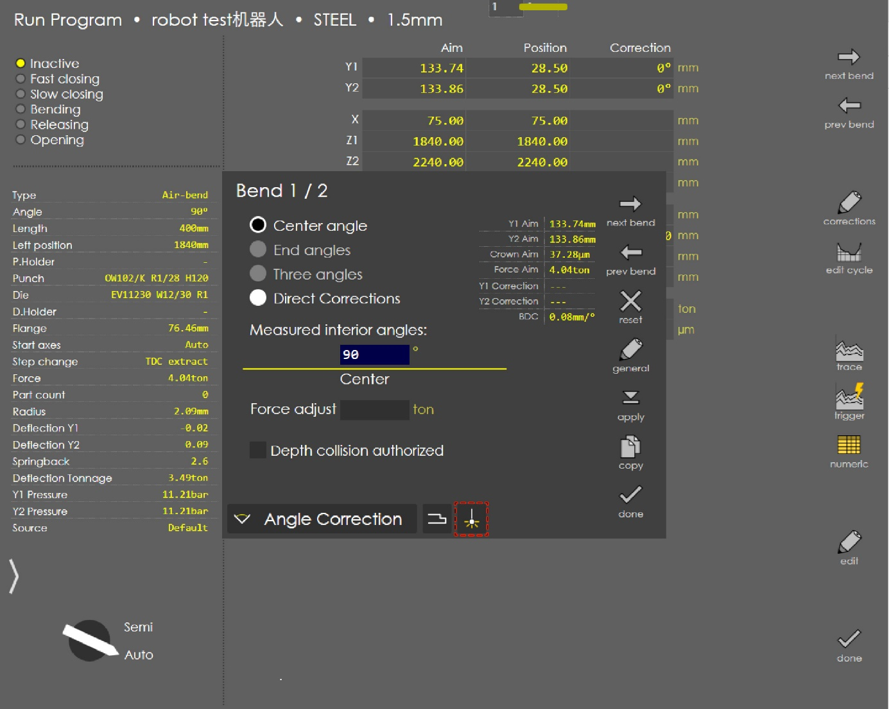
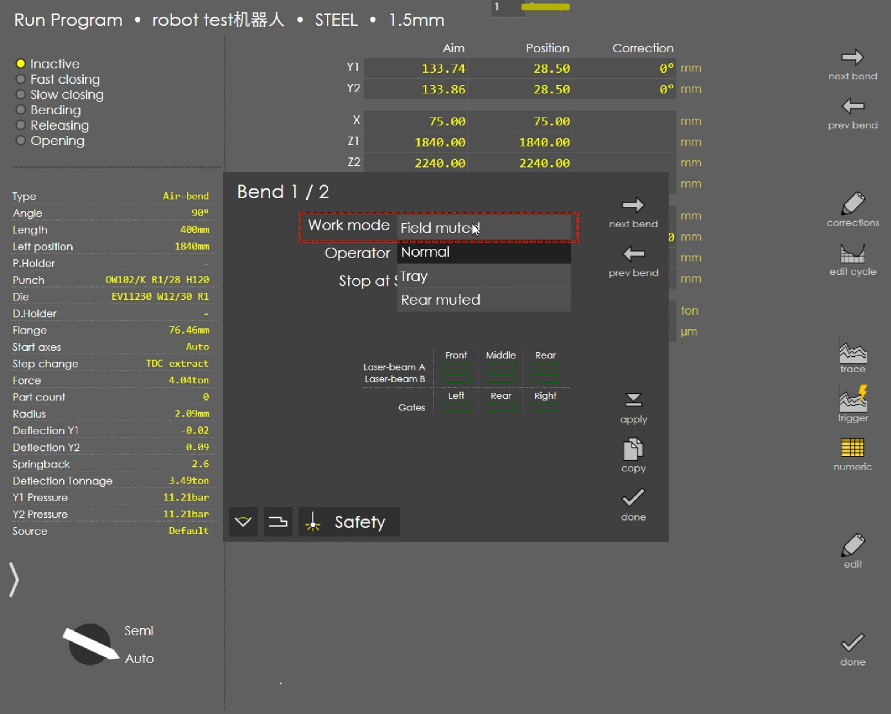

Operating Mode Key Switch
| The key switch for the robot operating mode has the ID. 1367012, the label for the key switch has the ID no. 1766724. |
The key switch is mounted externally on the left of the electrical cabinet. With the robot interface (option), the robot can be activated/deactivated using the key switch.
The key switch has the following positions:
| Position | Description |
|---|---|
0 |
Manual mode: stroke triggering by means of the foot switch |
1 |
Robot mode: stroke release by the robot and subsequent stroke triggering at the press brake. Teach mode and automatic mode are possible. |

In manual mode, the operator triggers the downward movement of the press beam using the Press Beam Down foot switch. The bending program run is advanced manually by the operator as required.
In robot mode, the downward movement of the press beam is triggered simultaneously by the industrial robot and the press brake. The entire bending program is started fully automatically and is executed synchronously. Robot mode is selected in the automatic mode and in the teach mode of the work cell. The bending program of the press brake and the travel program of the robot are synchronized so that they can work together. The foot switch remains connected to the press brake.
Robot mode
In robot mode, the programs should be setup.
Step change setting
-
Go to Run Program → Edit cycle.

-
Select TDC + External in step change.

Work mode setting
-
Go to Run Program → Corrections

-
Click the icon .

-
Choose Field muted in Work mode.

Manual mode
Step change setting
Do not choose TDC + External in Step change.
|
The automatic circuit breaker with tripping characteristic C4 must be switched through for the robot interface to function. If this automatic circuit breaker triggers, a short circuit in the interface and/or a short circuit in the industrial robot’s connected peripheral circuit can be assumed.